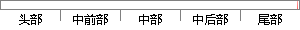

换句话说，以太坊给予了人们使用区块链技术来验证运行代码的执行情况的能力。
片段位置图

相似结果|
1
原句片段：换句话说，以太坊给予了人们使用区块链技术来验证运行代码的执行情况的能力。
相似片段 1：以太坊开发实战(第1部分:智能合约)。换句话说,以太坊使用了区块链技术来验证我们运行的代码执行的功能。如果还不清楚什幺是智能合约,或者想了解更多细节,可以点击...
|
※ 片段修改建议 ※
近似词参考：- 给予：赐与
- 使用：利用
- 技术：手艺 技能
- 能力：本领
系统自动生成语句：换句话说，以太坊赐与了人们利用区块链手艺来验证运行代码的执行情况的本领。
注：本片段修改建议为系统自动生成，仅供参考。